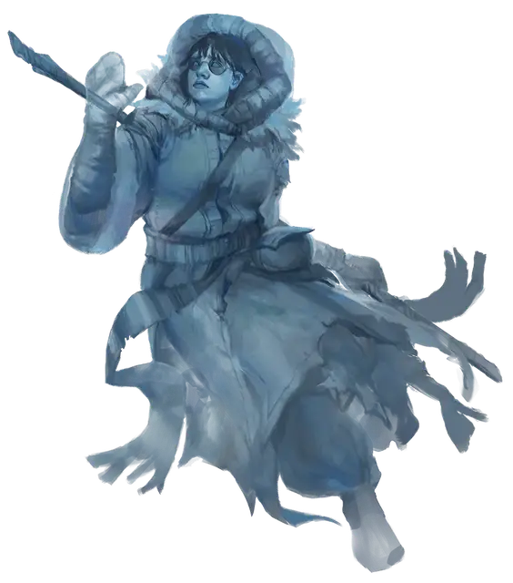

Привидение Нэсс Лантомир
Nass Lantomir's Ghost
Средняя Нежить, нейтрально-злая, именной НИП

Класс Доспеха 11
Хиты 45 (10к8)
Скорость 0 футов, летая 40 футов
| мод | спас | ||
|---|---|---|---|
| СИЛ | 7 | −2 | −2 |
| ЛОВ | 13 | +1 | +1 |
| ТЕЛ | 10 | +0 | +0 |
| мод | спас | ||
|---|---|---|---|
| ИНТ | 17 | +3 | +3 |
| МДР | 12 | +1 | +1 |
| ХАР | 17 | +3 | +3 |
Сопротивление урону звук, кислота, огонь, электричество; дробящий, колющий, рубящий от немагических атак
Иммунитет к урону некротическая энергия, холод, яд
Иммунитет к состояниям сбивание с ног, паралич, очарование, отравление, опутанность, окаменение, истощение, испуг, захват
Чувства тёмное зрение 60 футов, пассивное Восприятие 11
Языки Общий, Бездны, Драконий, Орочий
Опасность 6 (2300 опыта)
Бонус мастерства +3
Особенности
Эфирное зрение. Зрение привидения простирается на 60 футов на Эфирный План, когда оно находится на Материальном Плане, и наоборот.
Бестелесное перемещение. Привидение может перемещаться сквозь других существ и предметы, как если бы они были труднопроходимой местностью. Оно получает урон силовым полем 5 (1к10), если оканчивает ход внутри предмета.
Использование заклинаний. Привидение является заклинателем 6-го уровня. Её базовой характеристикой является Интеллект (Сл спасброска от заклинаний 14). У неё подготовлены следующие заклинания волшебника:
• Заговоры (неограниченно): волшебная рука [mage hand], луч холода [ray of frost], сообщение [message], фокусы [prestidigitation];
• 1-й уровень (4 ячейки): волна грома [thunderwave], обнаружение магии [detect magic];
• 2-й уровень (3 ячейки): —
• 3-й уровень (3 ячейки): контрзаклинание [counterspell].
Натура нежити. Привидению не нужен воздух, еда, питьё и сон.
Действия
Иссушающее касание. Рукопашная атака оружием: +6 к попаданию, досягаемость 5 футов, одна цель. Попадание: Урон некротической энергией 17 (4к6 + 3).
Эфирность. Привидение входит на Эфирный План с Материального Плана, или наоборот. Оно видимо на Материальном Плане, пока находится в Пограничном Эфире, и наоборот, хотя не может воздействовать на то, что находится на другом плане, и становиться целью эффектов, происходящих на другом плане.
Ужасный облик. Все существа, находящиеся в пределах 60 футов от привидения, не являющиеся нежитью, и способные видеть его, должны преуспеть в спасброске Мудрости Сл 14, иначе станут испуганными на 1 минуту. Если цель проваливает спасбросок на 5 и более единиц, она также стареет на 1к4 × 10 лет. Испуганная цель может повторять этот спасбросок в конце каждого своего хода, оканчивая испуганное состояние на себе при успехе. Если цель успешно совершила спасбросок или действие эффекта закончилось, она получает иммунитет к Ужасному облику этого привидения на следующие 24 часа. Эффект старения можно отменить заклинанием высшее восстановление, но только если оно будет наложено в течение 24 часов после воздействия.
Одержимость (перезарядка 6). Один гуманоид, видимый привидением в пределах 5 футов от себя, должен преуспеть в спасброске Харизмы Сл 13, иначе станет одержимым привидением; после этого привидение исчезает, а цель становится недееспособной и теряет контроль над своим телом. Теперь привидение контролирует это тело, но цель не теряет сознание. Привидение не может быть целью атак, заклинаний и прочих эффектов, кроме тех, что изгоняют нежить, и оно сохраняет своё мировоззрение, Интеллект, Мудрость, Харизму и иммунитет к испугу и очарованию. Во всём остальном привидение использует статистику одержимой цели, но оно не получает доступ к знаниям, классовым умениям и владениям цели.
Одержимость длится до тех пор, пока хиты тела не опустятся до 0, пока привидение не окончит его бонусным действием, или пока привидение не изгонят или не заставят уйти таким эффектом как заклинание рассеивание зла и добра [dispel evil and good]. Когда одержимость заканчивается, привидение возвращается в свободное пространство в пределах 5 футов от тела. Цель получает на 24 часа иммунитет к Одержимости этого привидения после того как преуспеет в спасброске или после того как одержимость закончится.
Описание
Нэсс Лантомир была учеником Зеленна Белого, одного из пяти архимагов руководящих Волшебным Братством. Отношения Нэсс и Зеленна начинались хорошо, но в последние годы Зеленну стало до боли очевидно, что Нэсс слишком медленно осваивает традиции школы магии Прорицания. Архимаг предложил Нэсс покинуть Главную Башню Волшебства и попрактиковаться за пределами Лускана, что заставило Нэсс почувствовать себя нежеланной. Однако после долгих раздумий Нэсс согласилась с этим предложением. Она посчитала, что сможет не только улучшить свой уровень владения магией, а также поступками заслужить уважение среди членов братства.
Когда Нэсс занималась подготовкой к отбытию из Главной Башни, она подслушала, как её учитель разговаривал с другим волшебником о тайной экспедиции в долину Ледяного Ветра, которая предпринимается в данный момент для поиска давно утраченной магии почившей в веках империи.
Вместо того чтобы осуществить свой первоначальный план, Нэсс последовала за своими соратниками по братству в долину Ледяного Ветра. Она догнала их в Брин Шандере и сообщила им, что её послал учитель на помощь экспедиции своими предсказаниями. Эгоизм и нервная обстановка внутри группы приведут вскорости к разделению волшебников, и каждый из них в одиночку решит добиться успеха в поставленной перед ними задачей.
Однажды ночью, пока остальные члены экспедиции спали, Нэсс украла сферу-профессора у одной из своих соратниц, Валин Харпел. Прислуживающие Валин двое кобольдов стали свидетелями кражи, и Нэсс убила их заклинанием Мельфова кислотная стрела [Melf’s acid arrow], перед своим побегом со сферой.
Нэсс покинула Десять Городов и направилась к морю Движущегося Льда, надеясь найти там Белый Завет — книгу магии и знаний, составленную последователями Аурил Морозной Девы. Волшебное Братство считает, что в этой книге рассказывается, как добраться до погребенного во льдах павшего города магов. Прежде чем Нэсс смогла получить книгу, она погибла и теперь существует как неупокоённое привидение до тех пор, пока не найдет фолиант. Наткнувшиеся на замороженные останки Нэсс персонажи, также находят её книгу заклинаний и сферу, которую она украла у Валин.
Фамильяр. Волшебный фамильяр Нэсс, — белая арктическая ласка Зеленнор, привыкшая к холодной погоде — присматривает за замёрзшими останками волшебницы. Она использует блок статистики куницы [weasel], но является феей, а не зверем. Если хиты Зеленнор уменьшатся до 0, привидение Нэсс не сможет наложить заклинание поиск фамильяра [find familiar], для её возвращения.
Использование заклинаний. Став привидением, Насс может накладывать заклинания, которые она подготовила перед смертью, за исключением того, что привидение не может использовать заклинания требующие материальных компонентов, что ограничивает её возможности. В списке её подготовленных заклинаний указаны только те заклинания, которые она может использовать. Хотя у неё нет доступных заклинаний 2-го уровня, привидение может использовать свои ячейки заклинаний 2-го уровня для наложения улучшенной версии заклинания волна грома [thunderwave].
Книга заклинаний. Обложка книги заклинаний Нэсс сделана из тонких деревянных дощечек, переплетена кожей нотика и закрывается на серебряные застежки. На корешке помимо названия книги «Дорожный фолиант Лантомир», начертана и личная печать Нэсс. В книге содержатся следующие заклинания: Мельфова кислотная стрела [Melf’s acid arrow], волна грома [thunderwave], контрзаклинание [counterspell], облако кинжалов [cloud of daggers], обнаружение магии [detect magic], обнаружение мыслей [detect thoughts], Тензеров парящий диск [Tenser’s floating disk], поиск фамильяра [find familiar] и подсматривание [clairvoyance].